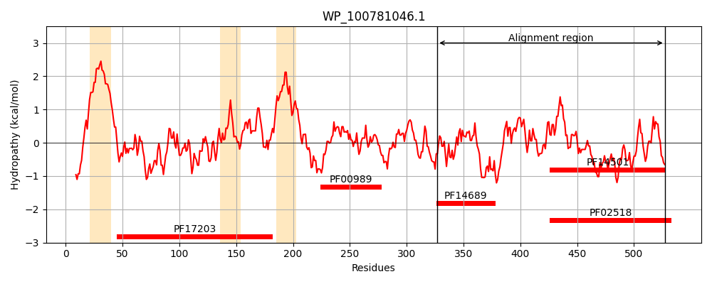
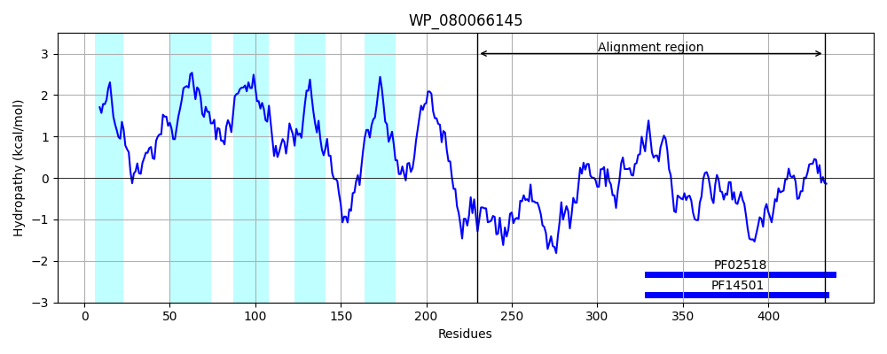
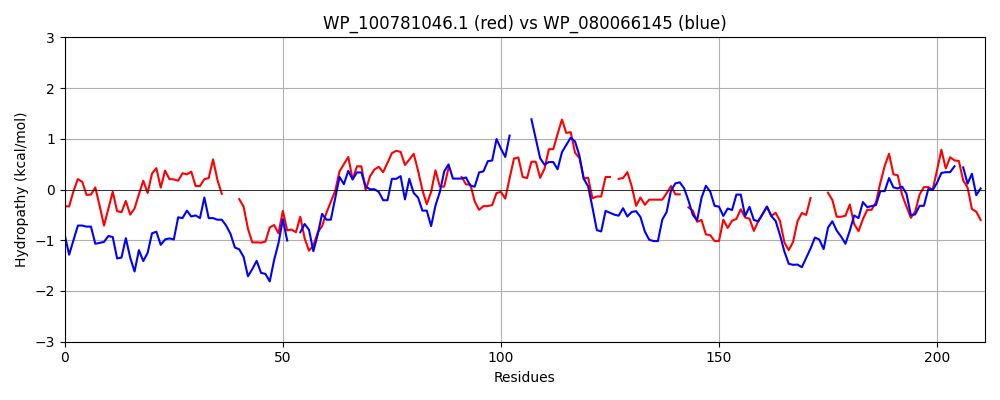

Hit Accession: WP_080066145
Hit TCID: 9.B.14.1.18
Hit Description: gnl|BL_ORD_ID|21467 gnl|TC-DB|WP_080066145.1|9.B.14.1.18 GHKL domain-containing protein [[Clostridium] hungatei]
Mach Len: 211
e:0.000000
Query TMS Count : 3
Hit TMS Count: 5
TMS-Overlap Score: 1.350000
Predicted Substrates:None
BLAST Alignment:
Score: 135 , Bit scores: 56 bits, E-value: 1.5e-08, Alignment length: 211, Percentage identity: 26
Query: 327 QRLDGMMSYVDALRTTSHEFMNKLHVILGLLNMKSYG---KLEEYVLQTAHRYQADIGDIQHRIKSPVVAGFLISKIQRATECGFTLTL--AEESLVPDCPNEKQVTVLVTVLGNLIENALDAMSG-QAEGEIGLLLHYQDG-WLSGEVSDDGPGIPENNIDAIFNKGFSTK---GENRGVGLFLANQQLRELGGTLAVESEPGVFTQFFV 527
+ + ++ + + + HE+ N L+ I GL + ++++Y+ A+ + +I + V + K A G L + E LV + + V VT++ N+IENA +AMS + E + LL Y G +S++GP I E+ IFN G+STK + RG GL + ++ G + + S + T+F +
Sbjct: 230 ENIQQLIDFNEMVAKERHEYKNHLNTIYGLCTLNKLDTNERIKQYINNYANN--SSTKNIFIDSGNDFVDAIINVKYNSAIRKGIELRVDFGEPLLVANIRED----VAVTIISNIIENAFEAMSSFERENKYVLLKTYIHGDKYFIPISNNGPAILESEKTRIFNAGYSTKDNPSKTRGFGLSIVKNEVARCNGDIRITSIEEI-TEFLI 433 | Protein Hydropathy Plots: |
|---|
|  |  |
Pairwise Alignment-Hydropathy Plot:
|
|---|
|  |